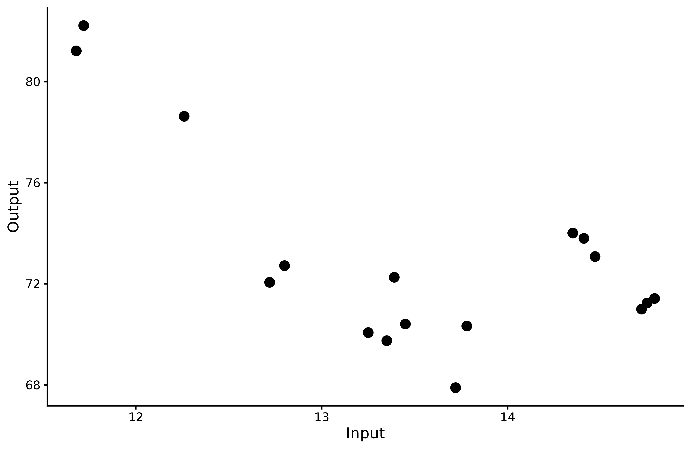
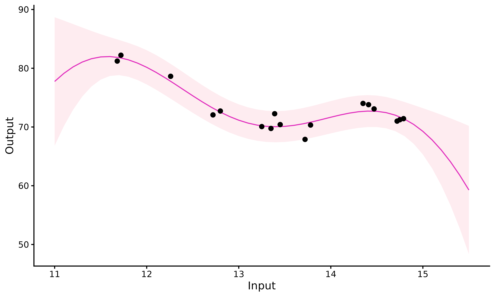

Classical pipeline
The overall pipeline for standard GP regression in MagmaClustR can be decomposed in 3 main steps: training, prediction and plotting of results. The corresponding functions are:
Data
Dataset format
Before using train_gp(), our dataset should present a
particular format. It must contains those 2 columns:
-
Input:numeric, -
Output:numeric.
If we fail to ensure that the dataset satisfies those conditions, the algorithm will return an error.
The data frame can also provide as many covariates (i.e. additional columns) as desired, with no constraints on the column names (except the name ‘Reference’ that should always be avoided, as it is used inside internal functions of the algorithm). These covariates are treated as additional input dimensions.
Example with swimming data
To explore the features of standard GP in MagmaClustR, we
use the swimmers dataset provided by the French Swimming
Federation (available here,
and studied more thoroughly here
and there).
Our goal is to model the progression curves of swimmers in order to forecast their future performances. Thus, we randomly select a female swimmer from the dataset; let’s give her the fictive name Michaela for the sake of illustration.
The swimmers dataset contains 4 columns:
ID, Age, Performance and
Gender. Therefore, we first need to change the name and
type of the columns, and remove Gender before using
train_gp().
Michaela <- swimmers %>% filter(ID == 1718) %>%
select(-Gender) %>%
rename(Input = Age, Output = Performance)We display Michaela’s performances according to her age to visualise her progression from raw data.
ggplot() +
geom_point(data = Michaela,
mapping = aes(x=Input,y=Output),
size = 3,
colour = "black") +
theme_classic()
Fit a GP on Michaela’s data points
Training
To obtain a GP that best fits our data, we must specify some parameters:
prior_mean: if we assume no prior knowledge about the 100m freestyle, we can decide to leave the default value for this parameter (i.e. zero). However, if we want to take expert advice into account, we can modify the value ofprior_meanaccordingly.kern: the relationship between observed data and prediction targets can be control through the covariance kernel. Therefore, in order to correctly fit our data, we need to choose a suitable covariance kernel. In the case of swimmers, we want a smooth progression curve for Michaela; therefore, we specifykern = "SE".
The most commonly used kernels and their properties are covered in the kernel
cookbook. Details of available kernels and how to combine them in
MagmaClustR are available in help(train_gp).
set.seed(2)
model_gp <- train_gp(data = Michaela,
kern = "SE",
prior_mean = 0)
#> The provided 'prior_mean' argument is of length 1. Thus, the hyper-posterior mean function has set to be constant everywhere.
#>
#> The 'ini_hp' argument has not been specified. Random values of hyper-parameters are used as initialisation.
#> Thanks to train_gp(), we learn the model
hyper-parameters from data, which can then be used to make prediction
for Michaela’s performances.
GP prediction
The arguments kern and mean remain the same
as above. We now need to specify:
- the hyper-parameters obtained with
train_gp()inhp; - the input values on which we want to evaluate our GP in
grid_inputs. Here, we want to predict Michaela’s performances until 15/16 years old, so we setgrid_inputs = seq(11, 15.5, 0.1).
See help(pred_gp)
to get information about the other optional arguments.
pred_gp <- pred_gp(data = Michaela,
kern = "SE",
hp = model_gp,
grid_inputs = seq(11,15.5,0.1),
plot = FALSE)
#> The 'mean' argument has not been specified. The mean function is thus set to be 0 everywhere.
#> Let us note that we could have called the pred_gp()
function directly on data. If we didn’t use the train_gp()
function beforehand, it is possible to omit the hp
parameter; pred_gp() would automatically learn
hyperparameters with default settings and us them to make predictions
afterwards.
Plotting the results
Finally, we display Michaela’s prediction curve and its 95%
associated credibility interval thanks to the plot_gp()
function. If we want to get a prettier graphic, we could specify
heatmap = TRUE to create a heatmap of probabilities instead
(note that it could be longer to display when evaluating on fine
grids).
plot_gp(pred_gp = pred_gp,
data = Michaela)
Close to Michaela’s observed data (\(t \in [ 10, 14 ]\)), the standard GP prediction behaves as expected: it accurately fits data points and the confidence interval is narrow. However, as soon as we move away from observed points, the GP drifts to the prior mean and uncertainty increases significantly.